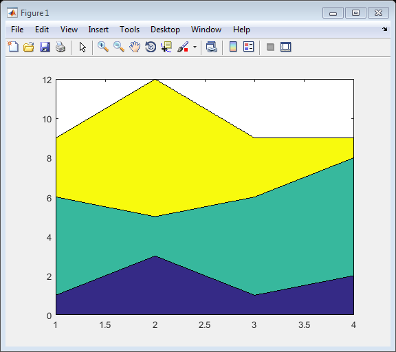

thingSpeakArea
Create filled area 2-D plot
Contents
Syntax
thingSpeakArea(X,Y)
thingSpeakArea(Y)
thingSpeakArea(X,Y,Name,Value)
Description
thingSpeakArea(X,Y) produces a stacked area plot suitable for showing the contributions of various components to a whole.
thingSpeakArea(Y) plots Y or plots each column in matrix Y as a separate curve and stacks the curves. The X axis automatically scales to X = 1:size(Y,1).
thingSpeakArea(X,Y,Name,Value) uses additional options specified by one or more Name,Value pair arguments.
Examples
Create Area Plot
Plot the data in matrix Y as an area graph.
Y = [1,5,3;3,2,7;1,5,3;2,6,1]; thingSpeakArea(Y)
Specify Line Style and Width
Create an area plot using a dotted line and a line width of 2.5.
Y = [1,5,3;3,2,7;1,5,3;2,6,1]; thingSpeakArea(Y,'LineStyle','-.','LineWidth',2.5)
Specify Title for Area Plot
Create an area plot with a title.
Y = [1,5,3;3,2,7;1,5,3;2,6,1]; thingSpeakArea(Y,'Title','This Is My Area Plot');
Input Arguments
X - X values, specified as a scalar, a vector, or a matrix. X can be a numeric array, logical array, or datetime array.
Y - Y values, specified as a scalar, a vector, or a matrix. Y can be a numeric array, or logical array.
S - Line type, color, and symbol, specified as a string. S is a string of multiple characters, up to one selection from each of these columns:
Color string |
Color |
Symbol string |
Symbol |
Line string |
Line style |
b |
blue |
. |
point |
- |
solid |
g |
green |
O |
circle |
: |
dotted |
r |
red |
x |
x-mark |
-. |
dashdot |
c |
cyan |
+ |
plus |
-- |
dashed |
m |
magenta |
* |
star |
none |
no line |
y |
yellow |
s |
square |
||
k |
black |
d |
diamond |
||
w |
white |
v |
triangle (up) |
||
^ |
triangle (down) |
||||
< |
triangle (left) |
||||
> |
triangle (right) |
||||
p |
pentagram |
||||
h |
hexagon |
Example: thingSpeakArea(X,Y,'c+:') plots a cyan dotted line with a plus at each data point.
Example: thingSpeakArea(X,Y,'bd') plots a blue diamond at each data point but does not draw a connecting line.
Name-Value Pair Arguments
Specify optional comma-separated pairs of Name,Value arguments. Name is the argument name and Value is the corresponding value. Name must appear inside single quotes (' '). You can specify several name and value pair arguments in any order as Name1,Value1,...,NameN,ValueN.
'FaceColor' |
Area face color, specified as one of these values:
An RGB triplet is a three-element row vector whose elements specify the intensities of the red, green, and blue components of the color. The intensities must be in the range [0,1], for example, [0.4 0.6 0.7]. This table lists RGB triplet values that have equivalent color strings.
Example: thingSpeakArea(X,Y,'FaceColor','blue'); Example: thingSpeakArea(X,Y,'FaceColor',[0 0 1]); |
|||||||||||||||||||||||||||
'EdgeColor' |
Area outline color, specified as one of these values:
An RGB triplet is a three-element row vector whose elements specify the intensities of the red, green, and blue components of the color. The intensities must be in the range [0,1], for example, [0.4 0.6 0.7]. | |||||||||||||||||||||||||||
'LineStyle' |
Line style, specified as one of the line style strings listed in this table.
|
|||||||||||||||||||||||||||
'LineWidth' |
Area outline width, specified as a scalar numeric value in point units. Example: thingSpeakArea(X,Y,'LineWidth',1.5); Data Types: single|double|int8|int16|int32|int64|uint8|uint16|uint32|uint64 |
|||||||||||||||||||||||||||
'Grid' |
Specify if your area plot has a grid. Set the value to 'on' to display a grid.. |
|||||||||||||||||||||||||||
'YLabel' |
Y-axis label, specified as a string. Example: thingSpeakArea(1:10,'YLabel','Y-Axis'); |
|||||||||||||||||||||||||||
'Xlabel' |
X-axis label, specified as a string. Example: thingSpeakArea(1:10,'XLabel','X-Axis'); |
|||||||||||||||||||||||||||
'Title' |
Title of plot, specified as a string. Example: thingSpeakArea(1:10,'Title','Plot Title'); |
|||||||||||||||||||||||||||
'XGrid' |
Specify if your area plot has a grid. Set the value to 'on' to display a grid. |
|||||||||||||||||||||||||||
'YGrid' |
Specify if your plot has a Y-axis grid. Set the value to 'on' to display a Y-axis grid. |
|||||||||||||||||||||||||||
'Legend' |
Add a legend to your graph, specified as a cell array of strings. Example: thingSpeakArea(x, y,'Legend',{'Sine','Cosine','Tangent'}); |

See Also
thingSpeakPlotYY | thingSpeakPlot | thingSpeakRead | thingSpeakScatter | thingSpeakStem | thingSpeakWrite | urlFilter